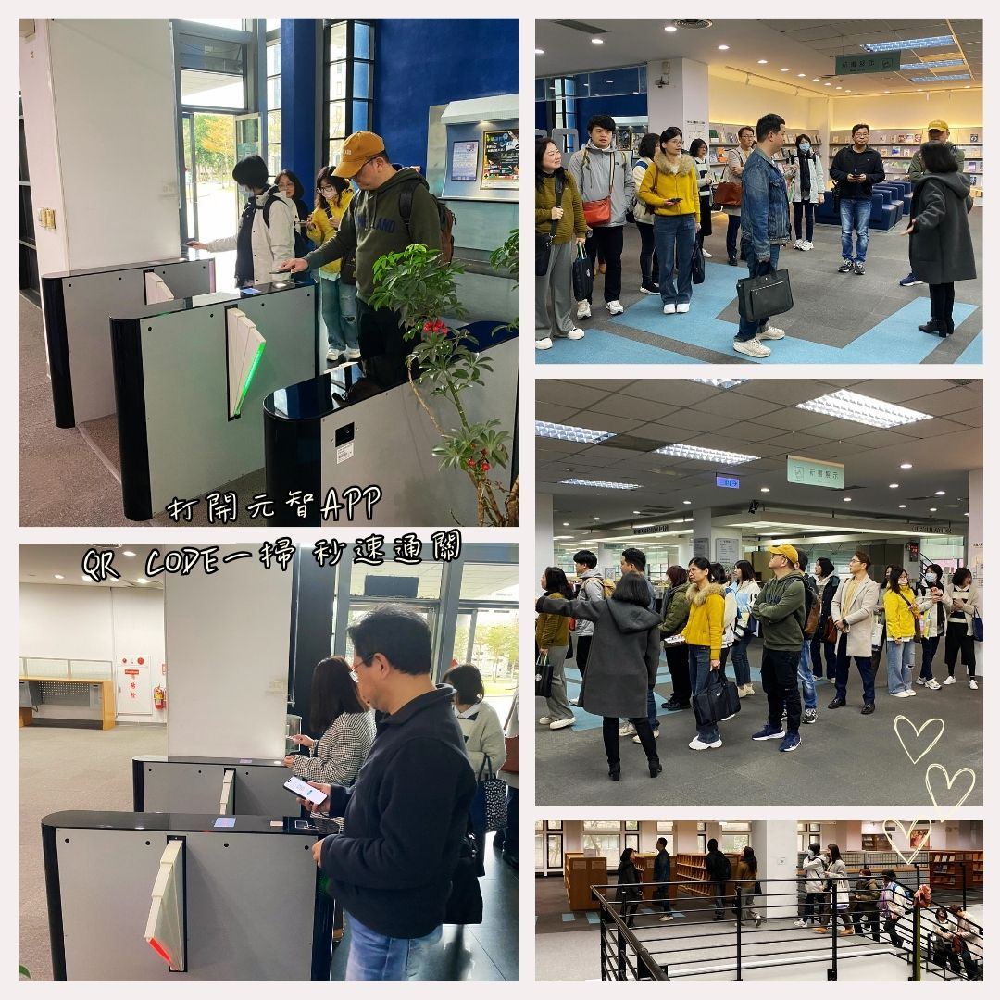

第2駅：入館門禁――知識の扉はここから開く

すべての旅には「はじまりの扉」があります。
図書館のスマート入館ゲートは、まさに知識の宇宙への入口。
学生証を軽くタッチするか、元智大学のアプリで通行ページを開けば、この賢い扉が静かにあなたのために開きます。
その瞬間から、あなたは単に図書館へ足を踏み入れるのではなく、物語に満ちた学びの旅に出発するのです。
この図書館は1989年に開館し、1997年に現在の建物である「五館」へと移転。そして2006年には拡張工事が行われ、現在では延べ10,000平方メートルのモダンな読書空間となりました。
三層構造のフロアには、それぞれ異なる個性があります：
• 地下1階そまるで静かな書の森のよう。書庫、ディスカッションルーム、和風の禅庭があり、集中と癒しの空間。
• 1階そ情報とサービスの中心となる場所。訪れた人を最初に迎えるフロア。
• 2階は最新の雑誌、絵本、漫画が揃った、楽しい読書の楽園。
さあ準備はできましたか？
次のステージは、新刊の香りが広がるフレッシュな戦場――さあ、新しい本たちに会いに行きましょう！